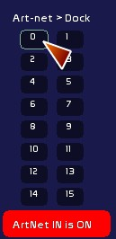

Table des matières
Dmx-In and Art-Net In
You can assgin to a dock dynamic contents such as
- DMX IN from your dmx card
- networked dmx, in the Art-Net protocol.
Dmx-In
This functions enables you to receive channels from the DMX-IN card you have configured in DMX Configuration panel
- Click [DMX-IN>Dock]
- Click the dock to assign to
Art-Net In
Assignment is done from Network Configuration page

- click the universe that you want to receive the Art-Net signal
- click the dock
- don't forget to set ART-NET IN to ON by clicking it
! Be aware that you need to have set a good network configuration, with IP and corresponding Art-Net port (see DMX Configuration panel )
Visualizing an incoming Art-Net signal

Under the feedback zone are 16 little circles.
When an Art-Net signal is received, the circle corresponding to its universe is lit in blue.
Green color shows transmissions from WhiteCat in art-net sent to the universe.